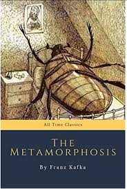

მეტამორფოზა
ინფორმაცია წიგნზე
ავტორი: ფრანც კაფკა
ჟანრი: აბსურდიზმი,ფილოსოფიური,ფანტასტიკა
გამოშვების თარიღი: 1915 წელი
აღწერა:
როდესაც გრეგორ სამსამ ერთ დილას შემაშფოთებელი სიზმრებისგან გაიღვიძა, საწოლში გადაკეთებული აღმოჩნდა ამაზრზენი მავნებელი.
ასე იწყება მეტამორფოზა, ერთ-ერთი ყველაზე ცნობადი საწყისი ხაზი ლიტერატურაში. გრეგორ სამსას ისტორია, ახალგაზრდა მამაკაცი, რომელიც ღამით გიგანტურ, ხოჭოს მსგავს მწერად გადაქცევის შემდეგ, ხდება მისი ოჯახის სამარცხვინო ობიექტი, საკუთარ სახლში აუტსაიდერი და არსებითად გაუცხოებული ადამიანი. მეოცე საუკუნის მხატვრული ლიტერატურის ერთ-ერთი ყველაზე ფართოდ წაკითხული და გავლენიანი ნაწარმოები, მეტამორფოზა არის შემზარავი, მაგრამ აბსურდულად კომიკური მედიტაცია არაადეკვატურობის, დანაშაულისა და იზოლაციის შესახებ. ნამუშევარი, რომელშიც ვლადიმირ ნაბოკოვის სიტყვებით „ყველაზე სრულყოფილად არის ინტეგრირებული კონტრასტი და ერთიანობა, სტილი და მატერია, მანერა და შეთქმულება“.
გამდიდრებული კლასიკა აძლიერებს თქვენს ჩართულობას ნაწარმოების ისტორიული და კულტურული მნიშვნელობის გაცნობით და ახსნით, ავტორის პირადი ისტორიისა და რა გავლენა იქონია ამ წიგნმა შემდგომ სტიპენდიაზე. ყოველი წიგნი შეიცავს სადისკუსიო კითხვებს, რომლებიც ეხმარება გარკვევას და განმტკიცებას ძირითადი თემებისა და კითხვის რეკომენდაციების შემდგომი კვლევისთვის.
ფრანც კაფკა (დაიბადა 3 ივლისი, 1883, პრაღა, ბოჰემია, ავსტრია-უნგრეთი [ახლანდელი ჩეხეთის რესპუბლიკა] - გარდაიცვალა 1924 წლის 3 ივნისს, კირლინგი, ვენის მახლობლად, ავსტრია) იყო გერმანულენოვანი მწერალი მხატვრული ლიტერატურისა, რომლის ნაწარმოებები, განსაკუთრებით რომანი Der Prozess (1925; სასამართლო პროცესი) და მოთხრობა Die Verwandlung (1915; მეტამორფოზა) - გამოხატავს შფოთვას და გაუცხოებას, რომელსაც ბევრი გრძნობს მე-20 საუკუნის ევროპასა და ჩრდილოეთ ამერიკაში.
ავტორის ხელმოწერა: